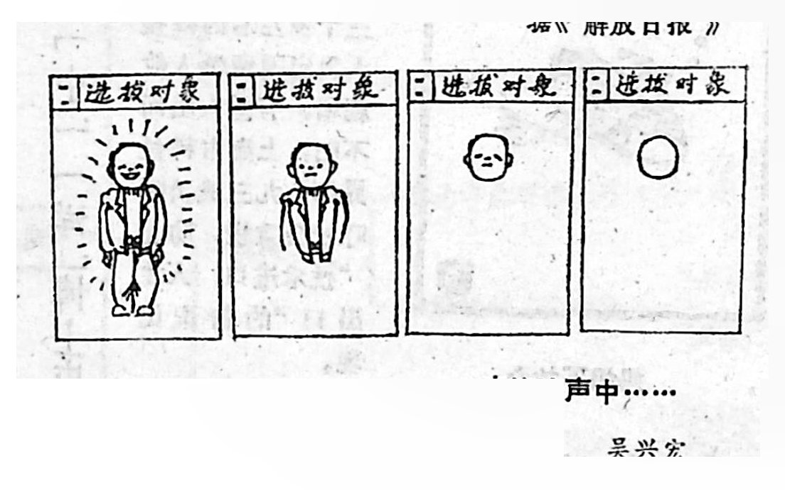

吴兴宏 《人事》1986年第2期（总第5期），第28页
在议论声中……
Amid All the Talk…
- Text in the drawing
- 提拔对象 (×4)
Candidate for promotion (×4) - Description
- Four portrait frames, each labeled 'candidate for promotion': the haloed figure shrinks from frame to frame until only an empty circle is left.
- Artist
- Wu Xinghong 吴兴宏
- Published in
- 《人事》1986年第2期（总第5期）, p. 28
- Themes
- Promotion · Talent and its neglect

Cite
Wu Xinghong, “在议论声中……” [Amid All the Talk…], Renshi (Personnel) 《人事》, 1986, no. 2, p. 28.